set.seed(1234)
n_birds <- 15
avg_nestlings_at_avg_mass <- log(4.2)
effect_of_one_gram <- .2
mother_masses_g <- rnorm(n_birds, mean = 15, sd = 3)
avg_mother_mass <- mean(mother_masses_g)
log_average_nestlings <- avg_nestlings_at_avg_mass +
effect_of_one_gram * (mother_masses_g - avg_mother_mass)
nestlings <- rpois(n = n_birds, lambda = exp(log_average_nestlings))Applied Bayesian models for working ecologists
This training covers how to write down a model, how to translate that into computer code, how to fit it to data and finally, how to work with the resulting posterior distribution. We’ll use Stan, which is a language for writing Bayesian models, and practice with some of the tools that help us work with Stan: rstanarm, brms, tidybayes, shinystan.
This training is intended for experienced users of Bayesian tools and for complete beginners who want to use such tools.
This 6 to 8h online workshop was conducted in 4 sessions: March 22, 24, 29, 31, 2022, from 11AM – 1 PM Pacific Time / 12 – 2 PM Mountain Time / 2-4 PM Eastern Time. The training was built and presented by Dr. Andrew MacDonald in English with bilingual support throughout.
Andrew MacDonald is the Training Coordinator of the BIOS² program. He is a quantitative ecologist who works mostly in R and a well-experienced trainer in teaching quantitative and computational methods. He is currently a research professional at Université de Sherbrooke.
1 Day 1
2 Day 2: Hierarchical and nonlinear models
In which we discuss many groups and curving lines.
Outline
- Return to previous model: Poisson regression
- Panel regression version of this model
- Bayesian workflow
- Brief foray into moment matching
- Nonlinear model
- Nonlinear model with random effects
Quick review
Bird masses
This example is based on work by Marie-Eve at UdeS!
We imagine a model like the following:
\[ \begin{align} \text{Nestlings}_i & \sim \text{Poisson}(\lambda_i) \\ \text{log}(\lambda_i) &= \beta_0 + \beta_1 \times \text{Mass}_i \\ \beta_0 & \sim \text{Normal}(??, ??) \\ \beta_1 & \sim \text{Normal}(??, ??) \end{align} \]
\(i\) keeps track of which bird we are talking about. You can think of it as “bird number i”
Note: We could also write the model like this:
\[ \begin{align} \text{Nestlings}_i & \sim \text{Poisson}(e^{\beta_0} \times e^{\beta_1 \times \text{Mass}_i}) \\ \beta_0 & \sim \text{Normal}(??, ??) \\ \beta_1 & \sim \text{Normal}(??, ??) \end{align} \]
Centering variables
Centering variables is one of the most important things we can do to help our models be more interpretable. This also helps us to set good priors.
Centering a variable means to subtract the mean from the variable:
\[ \begin{align} \text{Nestlings}_i & \sim \text{Poisson}(\lambda_i) \\ \text{log}(\lambda_i) &= \beta_0 + \beta_1 \times (\text{Mass}_i - \overline{\text{Mass}}) \\ \beta_0 & \sim \text{Normal}(??, ??) \\ \beta_1 & \sim \text{Normal}(??, ??) \end{align} \]
Question How does this change the meaning of \(\beta_0\) and/or \(\beta_1\), if at all? (Hint: what will be the equation for a bird who has exactly average mass?)
Plot these to get an idea of it:
suppressPackageStartupMessages(library(tidyverse))
imaginary_birds <- tibble(mother_masses_g, nestlings)
ggplot(imaginary_birds, aes(x = mother_masses_g, y = nestlings)) +
geom_point()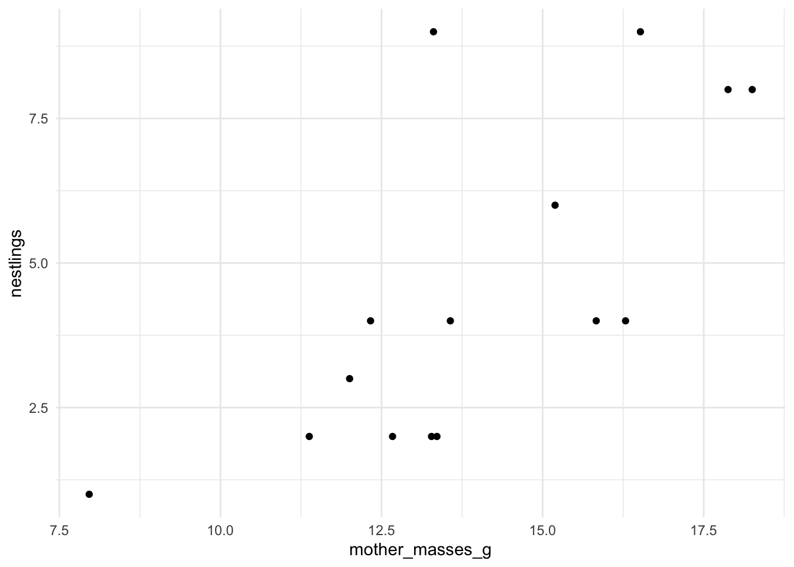
NOTE We can also fit this very same model by frequentist statistics, using lm
coef(glm(nestlings ~ 1 + I(mother_masses_g - mean(mother_masses_g)), family = "poisson")) (Intercept)
1.4138103
I(mother_masses_g - mean(mother_masses_g))
0.1727791 # compare to known values
avg_nestlings_at_avg_mass[1] 1.435085effect_of_one_gram[1] 0.2Bayesian workflow: define a model and priors
library(brms)
imaginary_birds_centered <- imaginary_birds |>
mutate(mother_mass_g_cen = mother_masses_g - mean(mother_masses_g))
bird_form <- bf(nestlings ~ 1 + mother_mass_g_cen, family = poisson(link = "log"))
get_prior(bird_form, data = imaginary_birds_centered) prior class coef group resp dpar nlpar lb ub
(flat) b
(flat) b mother_mass_g_cen
student_t(3, 1.4, 2.5) Intercept
source
default
(vectorized)
defaultWe set a prior for each parameter.
bird_priors <- c(
prior(normal(1, .5), class = "Intercept"),
prior(normal(.1, .1), class = "b", coef = "mother_mass_g_cen")
)Prior predictive checks
prior_predictions <- brm(bird_form,
data = imaginary_birds_centered,
prior = bird_priors,
sample_prior = "only",
file = "bird_model",
file_refit = "on_change",
refresh = FALSE)Plot a few of these:
library(tidybayes)
imaginary_birds_centered |>
add_predicted_draws(prior_predictions, ndraws = 6, seed = 4321) |>
ggplot(aes(x = mother_masses_g, y = .prediction)) + geom_point() + facet_wrap(~.draw)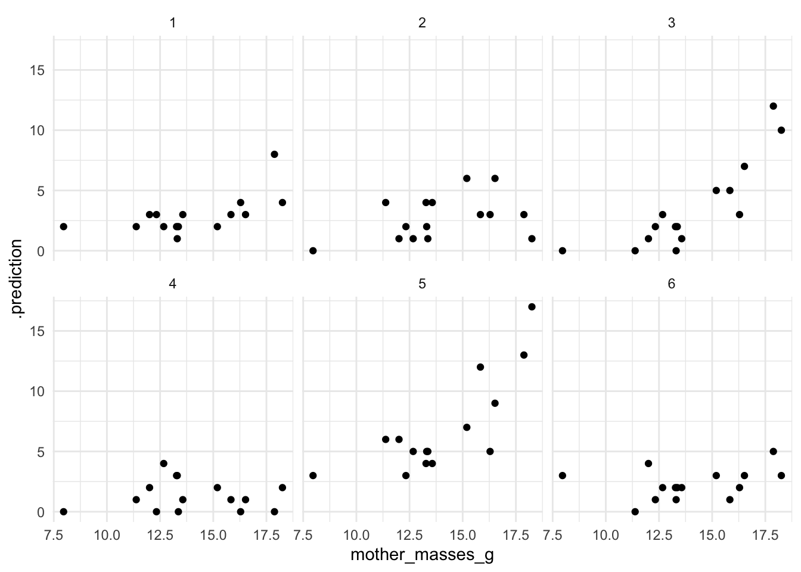
Question are we satisfied with these priors?
Fit to the data
bird_posterior <- update(prior_predictions, sample_prior = "yes",
file = "bird_posterior",
file_refit = "on_change", refresh = FALSE)The desired updates require recompiling the modelsummary(bird_posterior) Family: poisson
Links: mu = log
Formula: nestlings ~ 1 + mother_mass_g_cen
Data: imaginary_birds_centered (Number of observations: 15)
Draws: 4 chains, each with iter = 2000; warmup = 1000; thin = 1;
total post-warmup draws = 4000
Population-Level Effects:
Estimate Est.Error l-95% CI u-95% CI Rhat Bulk_ESS Tail_ESS
Intercept 1.39 0.13 1.14 1.64 1.00 1979 2070
mother_mass_g_cen 0.16 0.04 0.07 0.25 1.00 2376 2463
Draws were sampled using sampling(NUTS). For each parameter, Bulk_ESS
and Tail_ESS are effective sample size measures, and Rhat is the potential
scale reduction factor on split chains (at convergence, Rhat = 1).knitr::kable(head(tidybayes::tidy_draws(bird_posterior)))| .chain | .iteration | .draw | b_Intercept | b_mother_mass_g_cen | prior_Intercept | prior_b_mother_mass_g_cen | lprior | lp__ | accept_stat__ | stepsize__ | treedepth__ | n_leapfrog__ | divergent__ | energy__ |
|---|---|---|---|---|---|---|---|---|---|---|---|---|---|---|
| 1 | 1 | 1 | 1.450523 | 0.1357033 | 0.7548442 | 0.2027851 | 0.6881775 | -29.18266 | 0.9686242 | 0.8998242 | 2 | 7 | 0 | 29.84270 |
| 1 | 2 | 2 | 1.415657 | 0.1138594 | 0.7622771 | 0.0676872 | 0.8027096 | -29.58861 | 0.9127170 | 0.8998242 | 2 | 3 | 0 | 29.93907 |
| 1 | 3 | 3 | 1.456546 | 0.1777444 | 0.7965764 | 0.1959839 | 0.4387761 | -29.24064 | 0.9937692 | 0.8998242 | 2 | 3 | 0 | 29.87044 |
| 1 | 4 | 4 | 1.440214 | 0.1352149 | 0.7316238 | 0.1870379 | 0.7082742 | -29.17389 | 0.9942078 | 0.8998242 | 2 | 7 | 0 | 29.34977 |
| 1 | 5 | 5 | 1.436886 | 0.1975367 | 1.2892340 | 0.0588215 | 0.3004459 | -29.50809 | 0.9286261 | 0.8998242 | 2 | 7 | 0 | 29.73433 |
| 1 | 6 | 6 | 1.450670 | 0.0961187 | 0.4208806 | 0.1258187 | 0.7508956 | -30.07357 | 0.9696699 | 0.8998242 | 2 | 3 | 0 | 30.30790 |
How do our priors and posteriors compare?
library(ggridges)
tidybayes::tidy_draws(bird_posterior) |>
select(.draw, b_Intercept:prior_b_mother_mass_g_cen) |>
pivot_longer(-.draw) |>
ggplot(aes(x = value, y = name)) + geom_density_ridges()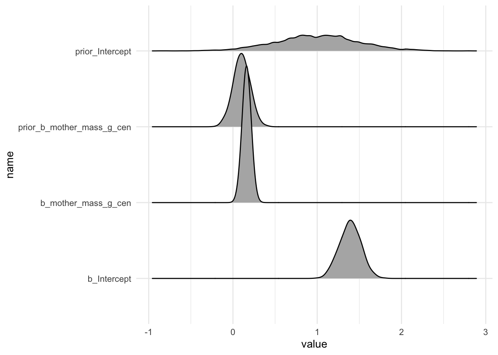
Can we draw the regression line?
average_mom <- mean(mother_masses_g)
range(imaginary_birds_centered$mother_mass_g_cen)[1] -6.025202 4.265214tibble(mother_mass_g_cen = modelr::seq_range(imaginary_birds_centered$mother_mass_g_cen,
n = 10)) |>
tidybayes::add_epred_draws(bird_posterior) |>
ungroup() |>
ggplot(aes(x = average_mom + mother_mass_g_cen, y = .epred)) +
stat_lineribbon() +
scale_fill_brewer(palette = "Greens", direction = -1) +
geom_point(aes(x = mother_masses_g, y = nestlings),
data = imaginary_birds_centered, pch = 21,
fill = "orange", size = 3)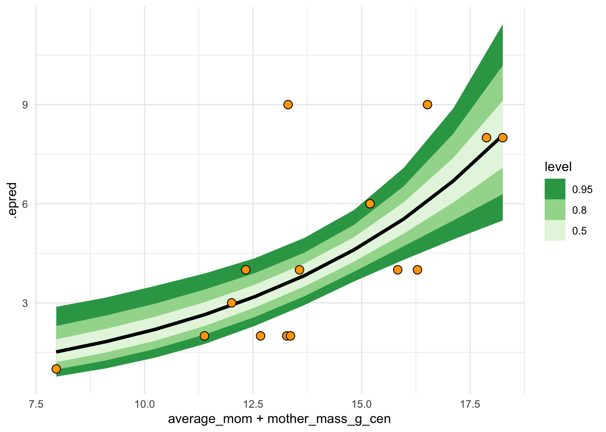
Let’s also try drawing the prediction intervals.
average_mom <- mean(mother_masses_g)
range(imaginary_birds_centered$mother_mass_g_cen)[1] -6.025202 4.265214tibble(mother_mass_g_cen = modelr::seq_range(imaginary_birds_centered$mother_mass_g_cen,
n = 10)) |>
tidybayes::add_predicted_draws(bird_posterior) |>
ungroup() |>
ggplot(aes(x = average_mom + mother_mass_g_cen, y = .prediction)) +
stat_lineribbon() +
scale_fill_brewer(palette = "Greens", direction = -1) +
geom_point(aes(x = mother_masses_g, y = nestlings),
data = imaginary_birds_centered, pch = 21,
fill = "orange", size = 3)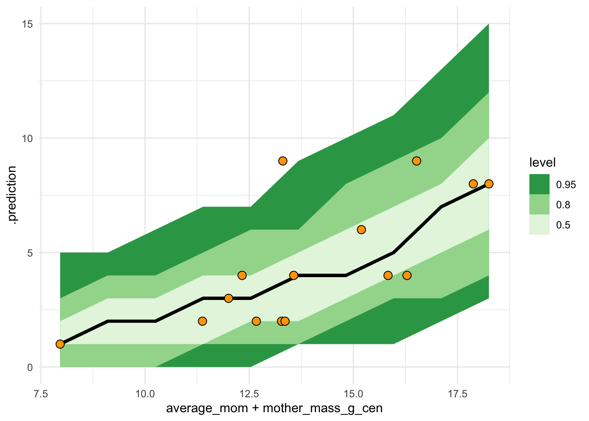
Other checks we can do:
bird_posterior_onlyparam <- update(prior_predictions, sample_prior = "no",
file = "bird_posterior",
file_refit = "on_change", refresh = FALSE)
shinystan::launch_shinystan(bird_posterior_onlyparam)Multilevel models
Based on the awesome vignette for vignette for tidybayes
We begin by sampling some data from five different “conditions”:
library(modelr)
set.seed(5)
n <- 10
n_condition <- 5
ABC <-
data_frame(
condition = rep(c("A", "B", "C", "D", "E"), n),
response = rnorm(n * 5, c(0, 1, 2, 1, -1), 0.5)
)
ABC %>%
ggplot(aes(y = condition, x = response)) +
geom_point(pch = 21, size = 4, stroke = 1.4, fill = "#41b6c4")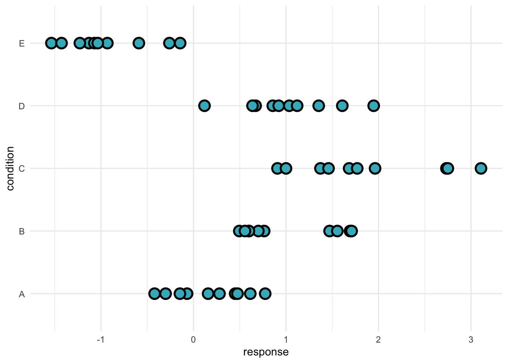
And by fitting a model to these data, with varying intercepts for each group:
m <- brm(
response ~ (1 | condition), data = ABC,
control = list(adapt_delta = .99),
prior = c(
prior(normal(0, 1), class = Intercept),
prior(student_t(3, 0, 1), class = sd),
prior(student_t(3, 0, 1), class = sigma)
)
)An easy way to visualize these results is with a ridgeline plot as above
ABC %>%
modelr::data_grid(condition) %>%
tidybayes::add_predicted_draws(m) %>%
ggplot(aes(x = .prediction, y = condition)) +
geom_density_ridges(fill = "#41b6c4") +
theme_minimal()Picking joint bandwidth of 0.102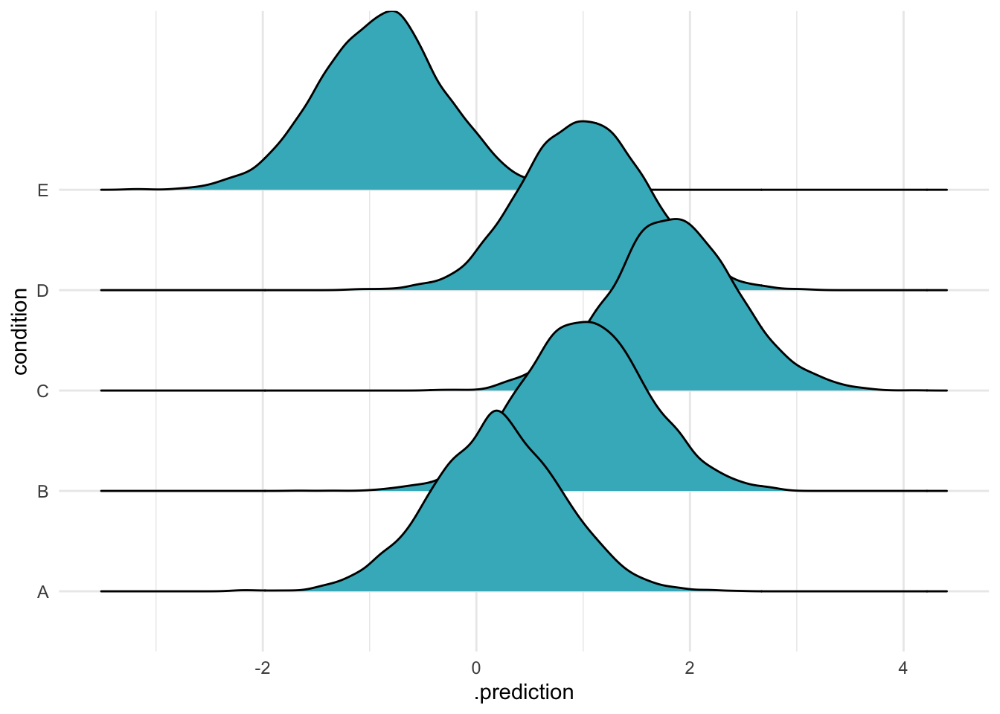
Alright. This used the simple vanilla option, add_predicted_samples(m). This uses the default options for making predictions, which recall is “NULL (default), include all group-level effects”. If you set add_predicted_samples(m, re_formula = NULL), you’ll get exactly the same figure.
So we can see that to “include” an effect is to take the actual estimated intercepts for each specific group we studied and use them to make new predictions for the same groups. This is Case 1 from McElreath’s list (though in this case, because we only have groups and nothing else, Case 1 and 2 are the same).
We can also say the exact same thing using a formula:
ABC %>%
data_grid(condition) %>%
add_predicted_draws(m, re_formula = ~(1|condition)) %>%
ggplot(aes(x = .prediction, y = condition)) +
geom_density_ridges(fill = "#41b6c4") +
theme_minimal()Picking joint bandwidth of 0.1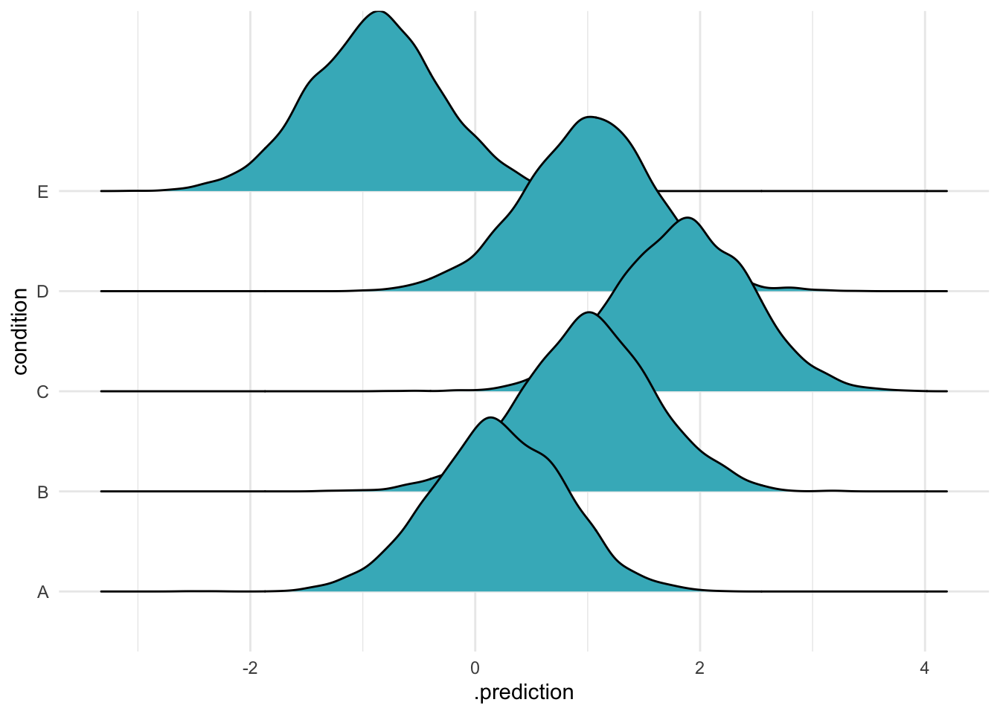
That’s right, there are three ways to say the exact same thing: say nothing, say NULL, or say the original “random effects” formula1. You go with what you feel in your heart is right, but I prefer the formula.
In all three cases, we are using the model to predict the means for the groups in our varying-intercepts model. This is what the documentation means by “including” these varying intercepts.
Squishing those random effects
OK, so that was three separate ways to make predictions for the same groups. What else can we do? Let’s try that thing with the NA argument, which means “include no group-level effects”:
ABC %>%
data_grid(condition) %>%
add_predicted_draws(m, re_formula = NA,
n = 2000) %>%
ggplot(aes(x = .prediction, y = condition)) +
geom_density_ridges(fill = "#41b6c4") + theme_minimal()Picking joint bandwidth of 0.142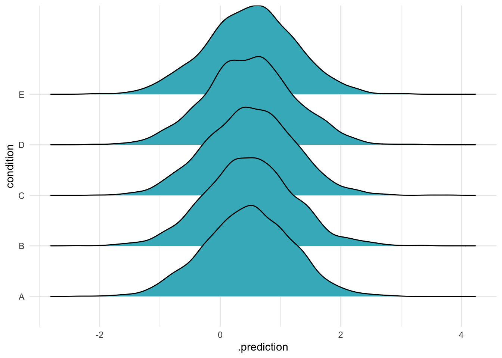
Ah, so if you do this, all the groups come out the same! But if they’re all the same, what do they represent? It seems reasonable that they represent the model’s intercept, as if the varying intercepts were all 0. Let’s calculate predicitons that ignore the varying effects – that is, using only the model intercept and the standard deviation of the response – using a bit of [handy purrr magic]2:
m %>%
spread_draws(b_Intercept, sigma) %>%
mutate(prediction = rnorm(length(b_Intercept), b_Intercept, sigma),
#map2_dbl(b_Intercept, sigma, ~ rnorm(1, mean = .x, sd = .y)),
Prediction = "prediction") %>% #glimpse %>%
ggplot(aes(x = prediction, y = Prediction)) +
geom_density_ridges(fill = "#41b6c4") +
theme_minimal()Picking joint bandwidth of 0.119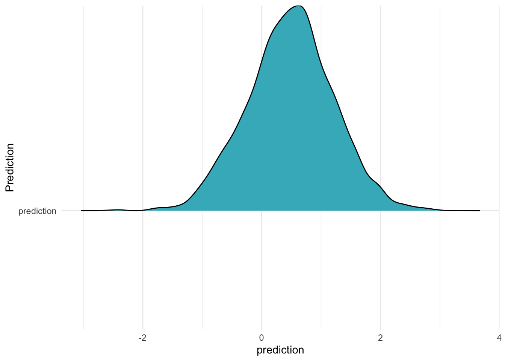
As you can see, this distribution has exactly the same shape as the five in the previous figure! It is as if we calculated the predictions for a group which was exactly at the average (in other words, it had a varying intercept of 0.) In the Rethinking book, readers are taught to do this in a much more explicit way: you actually generate all the 0 intercepts yourself, and give that to the model in place of the estimated intercepts! A very manual and concrete way to “set something to 0”.
brms does this too. As the documentation says >NA values within factors in newdata, are interpreted as if all dummy variables of this factor are zero.
The brms phrasing certainly takes less space, though it also requires you to remember that this is what NA gets you!
We can also remove random effects from our predictions by excluding them from the re_formula. In our model, we have only one varying effect – yet an even simpler formula is possible, a model with no intercept at all:
ABC %>%
data_grid(condition) %>%
add_predicted_draws(m, re_formula = ~ 0,
n = 2000) %>%
ggplot(aes(x = .prediction, y = condition)) +
geom_density_ridges(fill = "#41b6c4") + theme_minimal() Picking joint bandwidth of 0.14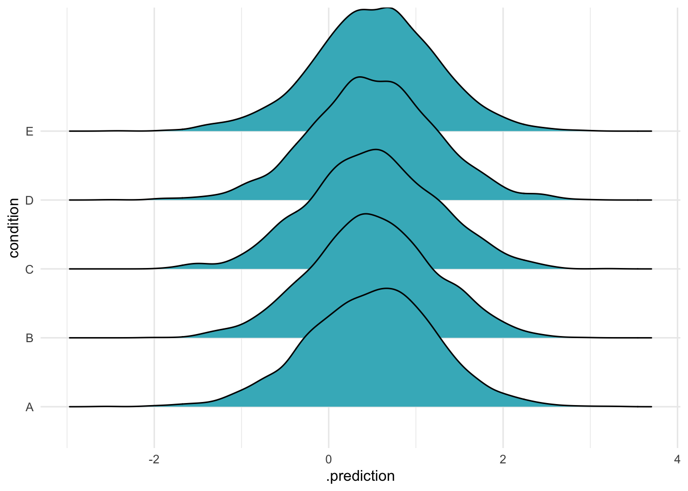
Once again, the same distribution appears: it is as if all group effects had been set to zero. If we had two random effects and omitted one, this is what we would get for the omitted effect – the expected value if all its effects were 0.
New levels
I’m going to show how to create predictions for new levels, but first I’m going to show two mistakes that I made frequently while learning:
First, asking for new levels without specifying allow_new_levels = TRUE:
# this does not work at all!!
data_frame(condition = "bugaboo") %>%
add_predicted_draws(m, re_formula = ~(1|condition),
n = 2000)Error: Levels 'bugaboo' of grouping factor 'condition' cannot be found in the fitted model. Consider setting argument 'allow_new_levels' to TRUE.That fails because I tried to pass in a level of my grouping variable that wasn’t in the original model!
Second, passing in new levels – but telling the function to just ignore them:
data_frame(condition = "bugaboo") %>%
add_predicted_draws(m, re_formula = NA,#~(1|condition),
n = 2000) %>%
ggplot(aes(x = .prediction, y = condition)) +
geom_density_ridges(fill = "#41b6c4") +
theme_minimal()Picking joint bandwidth of 0.142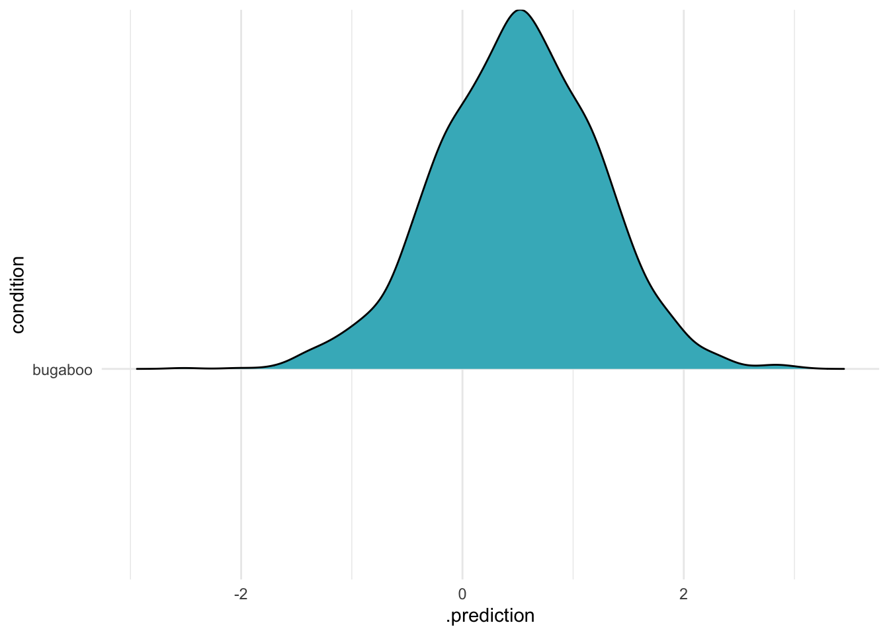
Here, I’m still passing in the unknown level – but the function doesn’t complain, because I’m not including random effects at all! This is the same result from above, when we used NA or ~0 to remove varying effects altogether. This is definitely something to watch for if you are passing in new data (I made this mistake, and it cost me an afternoon!)
If we avoid both of these errors, we get what we expect: our means for our original groups, and a new predicted mean for "bugaboo":
ABC %>%
data_grid(condition) %>%
add_row(condition = "bugaboo") %>%
add_predicted_draws(m, re_formula = ~(1|condition),
allow_new_levels = TRUE,
n = 2000) %>%
ggplot(aes(x = .prediction, y = condition)) +
geom_density_ridges(fill = "#41b6c4") + theme_minimal()Picking joint bandwidth of 0.131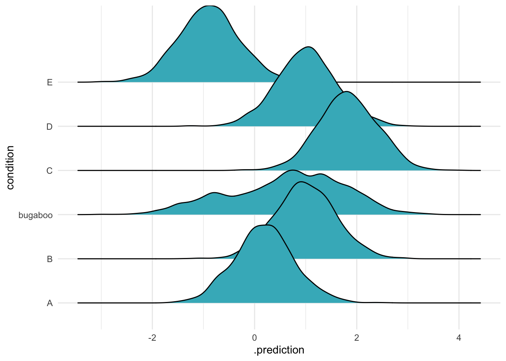
Here you can see that the new level is much flatter than the other original five. It comes from the same population as the others, which is rather variable (the group means are sort of different to each other). As a result, this new distribution is quite wide, including all that uncertainty.
An ecologist might do something like this if we were had data on some species in a community, but wanted to make predictions for new, as yet unobserved, species we might find next year.
3 Day 3: Offsets
In which we cover how to do a count analysis for different efforts or exposure.
Outline
- Poisson count model
- Bayesian Poisson count model
Today’s data: Dandelions
Let’s imagine that we have counted dandelions.
Dandelions occur on average 6 per square meter
However we have five kinds of quadrat: 1, 4, 9 and 25 square meters
library(tidyverse)
imaginary_dandelions <- tibble(quadrat_size = rep(c(1,4, 9, 25), each = 15),
n_per_m2 = purrr::map(quadrat_size, rpois, lambda = 6),
obs_dandelions = map_dbl(n_per_m2, sum))
ggplot(imaginary_dandelions, aes(x = obs_dandelions)) + geom_histogram() +
facet_wrap(~quadrat_size)`stat_bin()` using `bins = 30`. Pick better value with `binwidth`.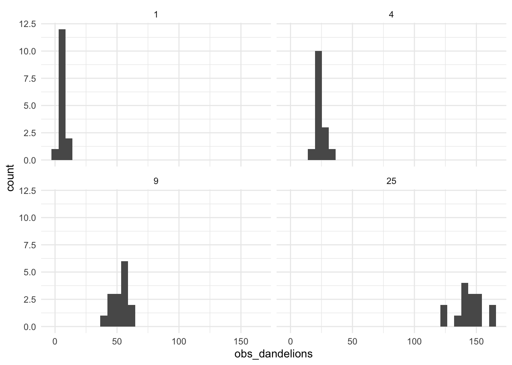
How can we get the correct number of dandelions?
Poisson count model
\[ \begin{align} y &\sim \text{Poisson}(\lambda) \\ \text{log}(\lambda) &= \beta \end{align} \] \(\lambda\) is the average response. If we want to measure the average per unit effort, we can do that too:
\[ \begin{align} y &\sim \text{Poisson}(\lambda) \\ \text{log}(\lambda/Q) &= \beta \end{align} \]
\[ \begin{align} y &\sim \text{Poisson}(\lambda) \\ \text{log}(\lambda) - \text{log}(Q) &= \beta \end{align} \]
\[ \begin{align} y &\sim \text{Poisson}(\lambda) \\ \text{log}(\lambda) &= \beta + \text{log}(Q) \end{align} \]
In other words, we need a way to add a log coefficient to a model and give it a slope of exactly one. Fortunately the function offset() is here to do exactly this:
dandelion_model <- glm(obs_dandelions ~ 1, family = poisson(link = "log"), data = imaginary_dandelions)
summary(dandelion_model)
Call:
glm(formula = obs_dandelions ~ 1, family = poisson(link = "log"),
data = imaginary_dandelions)
Deviance Residuals:
Min 1Q Median 3Q Max
-9.802 -6.227 -2.658 2.539 11.652
Coefficients:
Estimate Std. Error z value Pr(>|z|)
(Intercept) 4.03836 0.01714 235.6 <2e-16 ***
---
Signif. codes: 0 '***' 0.001 '**' 0.01 '*' 0.05 '.' 0.1 ' ' 1
(Dispersion parameter for poisson family taken to be 1)
Null deviance: 2909.7 on 59 degrees of freedom
Residual deviance: 2909.7 on 59 degrees of freedom
AIC: 3230.4
Number of Fisher Scoring iterations: 5This gives the wrong answer!
dandelion_model <- glm(obs_dandelions ~ 1 + offset(log(quadrat_size)),
family = poisson(link = "log"),
data = imaginary_dandelions)
summary(dandelion_model)
Call:
glm(formula = obs_dandelions ~ 1 + offset(log(quadrat_size)),
family = poisson(link = "log"), data = imaginary_dandelions)
Deviance Residuals:
Min 1Q Median 3Q Max
-1.83462 -0.45999 0.07473 0.46032 2.07858
Coefficients:
Estimate Std. Error z value Pr(>|z|)
(Intercept) 1.76109 0.01714 102.7 <2e-16 ***
---
Signif. codes: 0 '***' 0.001 '**' 0.01 '*' 0.05 '.' 0.1 ' ' 1
(Dispersion parameter for poisson family taken to be 1)
Null deviance: 43.464 on 59 degrees of freedom
Residual deviance: 43.464 on 59 degrees of freedom
AIC: 364.13
Number of Fisher Scoring iterations: 4The coefficient should be close to 6, after we reverse the link function:
exp(coef(dandelion_model)[[1]])[1] 5.818803Do it the Bayes Way
library(brms)
dandelion_bf <- bf(obs_dandelions ~ 1 + offset(log(quadrat_size)),
family = poisson(link = "log"))
get_prior(dandelion_bf, data = imaginary_dandelions)Intercept ~ student_t(3, 1.89940130916892, 2.5)dandelion_prior <- prior(normal(2, 1), class = "Intercept")
dandelion_model <- brm(formula = dandelion_bf,
data = imaginary_dandelions,
prior = dandelion_prior)Compiling Stan program...Start sampling
SAMPLING FOR MODEL '712e52da308896603a6860da7d30e1d5' NOW (CHAIN 1).
Chain 1:
Chain 1: Gradient evaluation took 2.3e-05 seconds
Chain 1: 1000 transitions using 10 leapfrog steps per transition would take 0.23 seconds.
Chain 1: Adjust your expectations accordingly!
Chain 1:
Chain 1:
Chain 1: Iteration: 1 / 2000 [ 0%] (Warmup)
Chain 1: Iteration: 200 / 2000 [ 10%] (Warmup)
Chain 1: Iteration: 400 / 2000 [ 20%] (Warmup)
Chain 1: Iteration: 600 / 2000 [ 30%] (Warmup)
Chain 1: Iteration: 800 / 2000 [ 40%] (Warmup)
Chain 1: Iteration: 1000 / 2000 [ 50%] (Warmup)
Chain 1: Iteration: 1001 / 2000 [ 50%] (Sampling)
Chain 1: Iteration: 1200 / 2000 [ 60%] (Sampling)
Chain 1: Iteration: 1400 / 2000 [ 70%] (Sampling)
Chain 1: Iteration: 1600 / 2000 [ 80%] (Sampling)
Chain 1: Iteration: 1800 / 2000 [ 90%] (Sampling)
Chain 1: Iteration: 2000 / 2000 [100%] (Sampling)
Chain 1:
Chain 1: Elapsed Time: 0.028059 seconds (Warm-up)
Chain 1: 0.026169 seconds (Sampling)
Chain 1: 0.054228 seconds (Total)
Chain 1:
SAMPLING FOR MODEL '712e52da308896603a6860da7d30e1d5' NOW (CHAIN 2).
Chain 2:
Chain 2: Gradient evaluation took 9e-06 seconds
Chain 2: 1000 transitions using 10 leapfrog steps per transition would take 0.09 seconds.
Chain 2: Adjust your expectations accordingly!
Chain 2:
Chain 2:
Chain 2: Iteration: 1 / 2000 [ 0%] (Warmup)
Chain 2: Iteration: 200 / 2000 [ 10%] (Warmup)
Chain 2: Iteration: 400 / 2000 [ 20%] (Warmup)
Chain 2: Iteration: 600 / 2000 [ 30%] (Warmup)
Chain 2: Iteration: 800 / 2000 [ 40%] (Warmup)
Chain 2: Iteration: 1000 / 2000 [ 50%] (Warmup)
Chain 2: Iteration: 1001 / 2000 [ 50%] (Sampling)
Chain 2: Iteration: 1200 / 2000 [ 60%] (Sampling)
Chain 2: Iteration: 1400 / 2000 [ 70%] (Sampling)
Chain 2: Iteration: 1600 / 2000 [ 80%] (Sampling)
Chain 2: Iteration: 1800 / 2000 [ 90%] (Sampling)
Chain 2: Iteration: 2000 / 2000 [100%] (Sampling)
Chain 2:
Chain 2: Elapsed Time: 0.02398 seconds (Warm-up)
Chain 2: 0.024673 seconds (Sampling)
Chain 2: 0.048653 seconds (Total)
Chain 2:
SAMPLING FOR MODEL '712e52da308896603a6860da7d30e1d5' NOW (CHAIN 3).
Chain 3:
Chain 3: Gradient evaluation took 1.2e-05 seconds
Chain 3: 1000 transitions using 10 leapfrog steps per transition would take 0.12 seconds.
Chain 3: Adjust your expectations accordingly!
Chain 3:
Chain 3:
Chain 3: Iteration: 1 / 2000 [ 0%] (Warmup)
Chain 3: Iteration: 200 / 2000 [ 10%] (Warmup)
Chain 3: Iteration: 400 / 2000 [ 20%] (Warmup)
Chain 3: Iteration: 600 / 2000 [ 30%] (Warmup)
Chain 3: Iteration: 800 / 2000 [ 40%] (Warmup)
Chain 3: Iteration: 1000 / 2000 [ 50%] (Warmup)
Chain 3: Iteration: 1001 / 2000 [ 50%] (Sampling)
Chain 3: Iteration: 1200 / 2000 [ 60%] (Sampling)
Chain 3: Iteration: 1400 / 2000 [ 70%] (Sampling)
Chain 3: Iteration: 1600 / 2000 [ 80%] (Sampling)
Chain 3: Iteration: 1800 / 2000 [ 90%] (Sampling)
Chain 3: Iteration: 2000 / 2000 [100%] (Sampling)
Chain 3:
Chain 3: Elapsed Time: 0.029274 seconds (Warm-up)
Chain 3: 0.02456 seconds (Sampling)
Chain 3: 0.053834 seconds (Total)
Chain 3:
SAMPLING FOR MODEL '712e52da308896603a6860da7d30e1d5' NOW (CHAIN 4).
Chain 4:
Chain 4: Gradient evaluation took 9e-06 seconds
Chain 4: 1000 transitions using 10 leapfrog steps per transition would take 0.09 seconds.
Chain 4: Adjust your expectations accordingly!
Chain 4:
Chain 4:
Chain 4: Iteration: 1 / 2000 [ 0%] (Warmup)
Chain 4: Iteration: 200 / 2000 [ 10%] (Warmup)
Chain 4: Iteration: 400 / 2000 [ 20%] (Warmup)
Chain 4: Iteration: 600 / 2000 [ 30%] (Warmup)
Chain 4: Iteration: 800 / 2000 [ 40%] (Warmup)
Chain 4: Iteration: 1000 / 2000 [ 50%] (Warmup)
Chain 4: Iteration: 1001 / 2000 [ 50%] (Sampling)
Chain 4: Iteration: 1200 / 2000 [ 60%] (Sampling)
Chain 4: Iteration: 1400 / 2000 [ 70%] (Sampling)
Chain 4: Iteration: 1600 / 2000 [ 80%] (Sampling)
Chain 4: Iteration: 1800 / 2000 [ 90%] (Sampling)
Chain 4: Iteration: 2000 / 2000 [100%] (Sampling)
Chain 4:
Chain 4: Elapsed Time: 0.023883 seconds (Warm-up)
Chain 4: 0.021166 seconds (Sampling)
Chain 4: 0.045049 seconds (Total)
Chain 4: Look at the Stan code:
stancode(dandelion_model)// generated with brms 2.18.0
functions {
}
data {
int<lower=1> N; // total number of observations
int Y[N]; // response variable
vector[N] offsets;
int prior_only; // should the likelihood be ignored?
}
transformed data {
}
parameters {
real Intercept; // temporary intercept for centered predictors
}
transformed parameters {
real lprior = 0; // prior contributions to the log posterior
lprior += normal_lpdf(Intercept | 2, 1);
}
model {
// likelihood including constants
if (!prior_only) {
// initialize linear predictor term
vector[N] mu = rep_vector(0.0, N);
mu += Intercept + offsets;
target += poisson_log_lpmf(Y | mu);
}
// priors including constants
target += lprior;
}
generated quantities {
// actual population-level intercept
real b_Intercept = Intercept;
}Look at posterior distribution of parameter:
# as.matrix(dandelion_model) |> head()
library(tidybayes)
tidy_draws(dandelion_model) |>
ggplot(aes(x = exp(b_Intercept))) +
geom_histogram() +
geom_vline(xintercept = 6, col = "red", lwd = 3)`stat_bin()` using `bins = 30`. Pick better value with `binwidth`.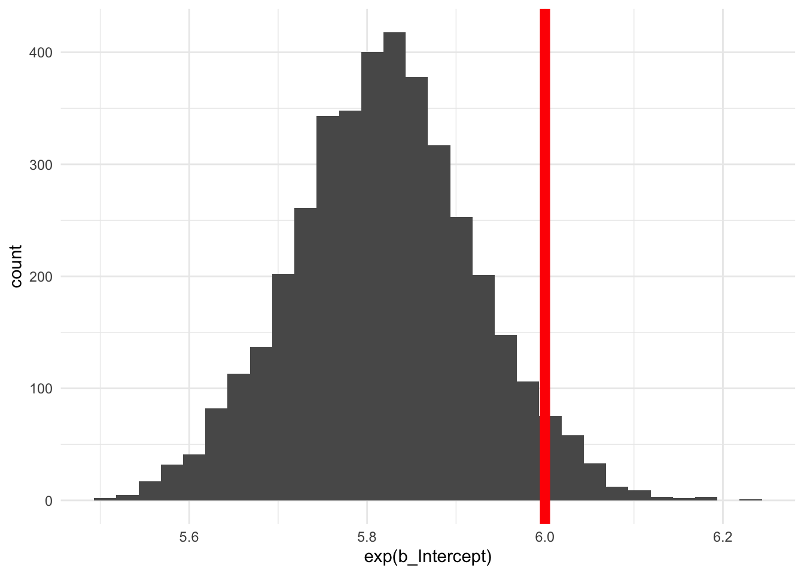
No matching items
Footnotes
Citation
BibTeX citation:
@online{macdonald2023,
author = {Andrew MacDonald},
title = {Bayes for the {Busy} {Ecologist}},
date = {2023-10-03},
url = {https://bios2.github.io/posts/2022-03-22-bayes-for-the-busy-ecologist},
langid = {en}
}
For attribution, please cite this work as:
Andrew MacDonald. 2023. “Bayes for the Busy Ecologist.”
BIOS2 Education Resources. October 3, 2023. https://bios2.github.io/posts/2022-03-22-bayes-for-the-busy-ecologist.